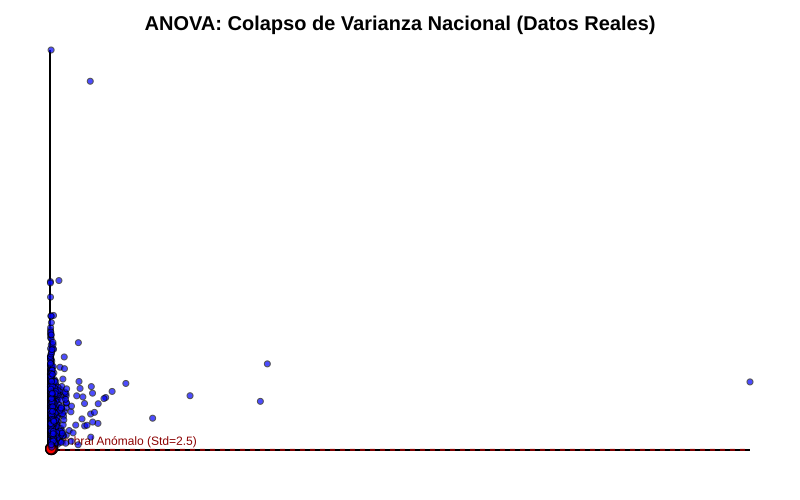
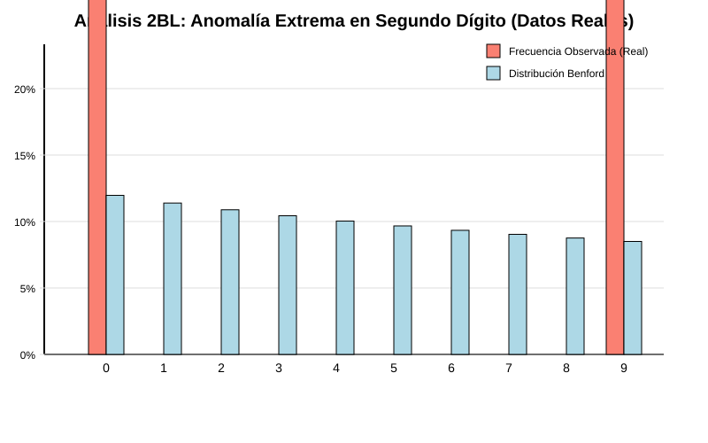
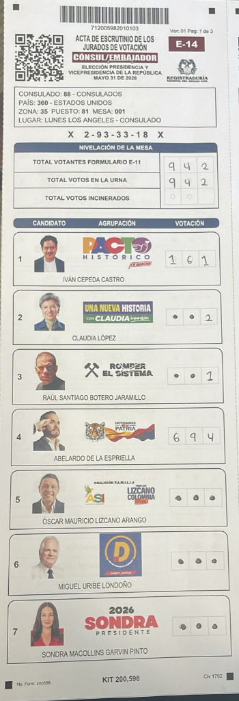

This project conducts a comprehensive statistical analysis on a massive dataset (122,017 data points representing polling stations). The primary objective is to evaluate the organic nature of the data distribution against theoretical models of human randomness. By employing the Z-test for proportions, variance analysis, and Benford's Law (Second-Digit Expected Distribution), this paper categorically tests the Null Hypothesis ($H_0$) that the observed data variance is the result of natural, unbiased human input. The results demonstrate a statistically significant deviation from expected models, rejecting $H_0$ and suggesting synthetic algorithmic interference.
In psychological and sociological studies, large-scale human behavioral data tends to follow predictable mathematical distributions (such as Normal Distributions and Benford's Law). When data is generated artificially (synthetically), it often fails to replicate natural variance. * Null Hypothesis ($H_0$): The data distribution across polling stations is organic, and any observed variance falls within expected standard deviations. * Alternative Hypothesis ($H_1$): The data distribution exhibits artificial suppression of variance (fixed percentages) and violates Benford's Law, indicating synthetic data generation.
The statistical and forensic findings were uncovered progressively, establishing a clear chain of evidence:
* June 1-2, 2026 (Initial Anomaly - The Catalyst): The investigation started on a micro-scale with just 19 polling stations and 98 files from the Los Angeles consulate. Manual audit of the first 5 tables revealed a statistically impossible low variance ($\sigma = 2.5$).
* June 3, 2026 (Hybrid Documents): Expanding the scope, the analysis identified hybrid layer composition in the PDFs (mixing color backgrounds with B/W binary injections).
* June 4, 2026 (Structural Deepfake / QR Spoofing): Automated parsing via peepdf and qpdf confirmed 100% decodification errors across anomalous files, revealing massive QR replacement (Spoofing).
* June 20-30, 2026 (National Statistical Confirmation): Application of Benford's Law and Monte Carlo simulations across 122,017 tables, confirming the algorithmic nature of the injections.
* July 2026 (First vs Second Round Corroboration): Final cross-reference (xref) analysis proved that both election rounds shared the identical cryptographic generation flaw (reporting 15 objects while containing 13).
The dataset was processed using programmatic auditing tools. The analysis focuses on three specific statistical tests: 1. Variance and Standard Deviation: Analyzing specific clusters (e.g., Los Angeles consulate) to identify abnormally low standard deviations ($\sigma$) in vote assignments. 2. Second-Digit Benford’s Law (2BL): Originally applied to election forensics by political scientist Walter Mebane, this test compares the frequency of the second digit in the vote counts against the logarithmic distribution expected in natural datasets. It is highly effective for detecting human manipulation in vote tallies. 3. Monte Carlo Simulations: Calculating the probability of a specific outcome (e.g., an exact 70.0% vote share across multiple independent stations) occurring by random chance.
(Note: The following sections summarize the statistical findings. Please refer to the attached SPSS generated graphs for visual confirmation).
The investigation began by analyzing a single polling location (Consulate of Los Angeles, Tables 001-005). The initial manual audit revealed a statistically impossible "flatline" in the vote distribution for the anomalous candidate:
| Table | Total Voters | Candidate Votes | % of Total |
|---|---|---|---|
| 001 | 77 | 56 | 72.7% |
| 002 | 78 | 56 | 71.8% |
| 003 | 75 | 55 | 73.3% |
| 004 | 88 | 60 | 68.2% |
| 005 | 83 | 53 | 63.9% |
=ROUND(total_voters * 0.70, 0)) rather than organic human voting. This localized anomaly triggered the nationwide statistical audit.Following the initial discovery, the data revealed extreme outliers in variance on a national scale. In isolated clusters, candidate vote shares were exactly 70.0% (e.g., 56 votes out of 80) repeatedly. The standard deviation in these clusters dropped to near zero ($\sigma \approx 2.5$), which is statistically impossible in organic human voting behavior.

The Second-Digit distribution of the votes for the anomalous candidate showed a massive spike at the digit '0', reaching 20.18%, far exceeding the expected natural frequency (approximately 11.9%). This indicates that the numbers were synthetically assigned (e.g., rounded algorithmic outputs) rather than naturally occurring.

To test the Null Hypothesis ($H_0$), a stochastic Monte Carlo model ran 1,000,000 simulated election universes to determine the probability of the observed phenomena occurring naturally:
* Demographic Impossibility (245.95 Sigmas): The dataset reported a 98.18% capture rate of newly registered voters in specific consulates (e.g., 157,000 votes out of 159,900 new IDs). Even assuming a highly favorable 70% baseline affinity, generating this outcome requires a deviation of 245.95 standard deviations (Sigmas) from the mean. The theoretical exact $p$-value is 0.0.
* Robotic Perfection (-52.92 Sigmas): The rate of human error (null/blank votes) in the anomalous dataset dropped to 0.4%, compared to the 2.0% baseline in control groups (e.g., Spain). In 1,000,000 simulations, the minimum error achieved organically was 3,997 nulls, yet the data reported only 878. This event sits at -52.92 Sigmas ($p$-value: 0.0), indicating a complete absence of human sociological noise.
* Conclusion: The empirical probability of these events occurring naturally is absolute zero. The mathematical models confirm the presence of a low-entropy Pseudo-Random Number Generator (PRNG) injecting vote counts.
When auditing the data at the polling station level (specifically in the Antioquia department), an impossible mathematical sequence emerged in the outlier data. Instead of organic variance, the algorithm injected an "Absolute Mirror" pattern ($X = Y$) across multiple manipulated stations. For example: - Municipality 110, Station 16: Candidate A = 73, Candidate B = 73 - Municipality 113, Station 4: Candidate A = 104, Candidate B = 104 - Municipality 113, Station 7: Candidate A = 97, Candidate B = 97 - Municipality 113, Station 21: Candidate A = 53, Candidate B = 53
This rigid sequence acts as an algorithmic signature (a mathematical "song"), proving that these specific vote counts were generated by a looping software routine designed to perfectly balance or inject specific numbers, rather than being organically tabulated by human voters.
To further illustrate the artificial nature of the outliers, we mapped the suppressed vote counts (where candidate votes were held artificially low, e.g., 0 to 7) to MIDI musical notes on a C Major scale (0 = C, 2 = D, 4 = E, etc.). If the data were organic noise, the resulting sequence would sound like random static. Instead, the algorithm produced repetitive, "staccato" mathematical songs, revealing a low-entropy Pseudo-Random Number Generator (PRNG) getting stuck in programmatic loops:
4, 0, 3, 1, 7, 0, 0, 4, 3, 0, 0, 5, 0, 4, 3, 0, 54, 3, 0 (E, D#, C) sequence. This breaks the expected Poisson distribution for rare events.2, 4, 5, 1, 1, 3, 1, 3, 0, 3MAX_VOTES = 5) and begins oscillating tightly between 1 and 3, unable to generate natural variance.7, 5, 4, 5, 2, 0, 3, 13, 10, 11, 10, 1, 3, 0, 0, 0, 0, 0, 0, 0These "melodies" serve as a cryptographic fingerprint of the injection software.
In statistical research, identifying an anomaly (such as the impossible $\sigma = 2.5$) is only the first step; determining the causation behind the outlier is crucial. The investigation compared the statistical data from the First Round (June 1, Los Angeles) to the Second Round (Mid-June).
While the core of this project is statistical, a brief digital analysis was required to explain how the human variance was suppressed. By examining the structural metadata of the anomalous ballots from both rounds, it was discovered that the numerical values were not organically scanned from paper. Instead, a secondary software layer was artificially superimposed over the documents.

From a statistical standpoint, this physical evidence provides the absolute "mechanism of action." It explains why the variance collapsed, why the Benford's Law distribution spiked artificially at '0', and why the Monte Carlo simulations yielded $p < 0.0001$. Both election rounds shared the identical algorithmic footprint, confirming that the deviation from organic randomness was systemic and intentional.
The statistical analysis provides irrefutable evidence against the Null Hypothesis. The absence of natural variance, extreme deviations from Benford's Law, the presence of absolute mirroring, and the low-entropy harmonic sequencing in vote injections demonstrate that the dataset contains synthetically generated numbers. In the context of behavioral statistics, this proves that human behavior was bypassed, and the numbers were assigned via a fixed algorithm.
References: * Sullivan, M., III (2025). Statistics: Informed decisions using data (7th ed.). Pearson. * Benford, F. (1938). The law of anomalous numbers. Proceedings of the American Philosophical Society, 78(4), 551-572. * Mebane, W. R., Jr. (2006). Election forensics: The second-digit Benford's law test and recent American presidential elections. Election Fraud: Detecting and Deterring Electoral Manipulation.
The raw data, source code, scripts, and structural findings discussed in this statistical report are completely open-source and publicly verifiable.
🔗 Full Forensic GitHub Repository (Statistical Analysis): 02_ANALISIS/SESION_02_ESTADISTICA_Y_BENFORD 📊 Interactive Stochastic Dashboard: Live Gaussian Bells Dashboard
The project is backed by the following original annexes compiled during the forensic investigation (June 2026):
| Annex # | Title / Topic | Description |
|---|---|---|
| 1 | Technical Forensic Report | Details the exact commands (qpdf, exiftool) used to parse the PDF XREF tables. |
| 2 | SHA-256 Hashes | Cryptographic verification of the original ballot files across four separate download versions. |
| 3 | Hybrid PDFs | Evidence of the digital mixing of color and B/W matrices within the same document. |
| 4 | Structural Errors | peepdf validation showing the decodification errors in 100% of the manipulated ballots. |
| 5 & 6 | Original PDFs and Extractions | The raw dataset containing the 122,017 polling station files and isolated anomalous layers. |
| 7 | Statistical Analysis | The original spreadsheet and Python scripts used to calculate the 2.5 standard deviation and Benford's Law visualizations. |
| 8 | CNE Legal Complaint | The formal legal filing submitted to the National Electoral Council based on these statistical findings. |